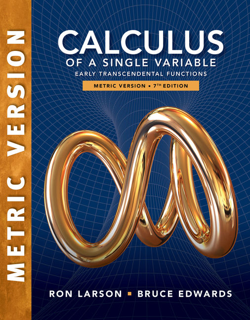

MATH201: Calculus III
Core chapter notes, learning outcomes, grading guidance, and textbook information for Calculus III. Use the chapter cards below to go directly to the main content.
Chapter Notes
The chapter links are the primary navigation for the published course notes.
Textbook

The course follows the adopted syllabus text and the chapter progression used in the published notes.
Larson, R. & Edwards, B., Calculus: Early Transcendental Functions, Metric Version, 7th edition, Cengage Learning, Inc., 2019.
Learning Outcomes
Based on the course syllabus.
- Describe and analyze parametric and polar curves, and identify surfaces in space.
- Compute areas, arc lengths, and surface areas in plane curves.
- Perform vector operations and determine equations of lines and planes in three-dimensional space.
- Analyze limits and continuity of multivariable functions.
- Compute directional derivatives, gradients, and tangent planes.
- Find local and global extrema of multivariable functions, including constrained extrema via Lagrange multipliers.
- Evaluate multiple integrals in rectangular, polar, cylindrical, and spherical coordinates.
Grading Policy
Summary of the syllabus grading weights and the class work normalization rule.
- Exam I75/300 (25%)
- Exam II75/300 (25%)
- Final Exam105/300 (35%)
- Class Work45/300 (15%)
Class Work Formula
y = 9 * (median(Exam I %) + median(Exam II %)) / 40
Expected class work average interval: [y - 1.5, y + 1.5]
Course Description
This course provides a comprehensive introduction to multivariable calculus, covering parametric and polar curves, vectors, lines, planes, and surfaces in space, cylindrical and spherical coordinates, functions of several variables, partial and directional derivatives, gradients, tangent planes, extrema with and without constraints, and double and triple integrals in various coordinate systems.